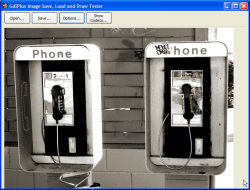
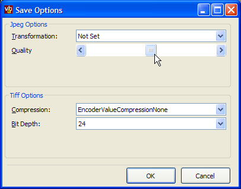

GDIPlus Codecs (37K)
GDIPlus Codecs (37K)
 Bugs: 0 / 1
Bugs: 0 / 1
 Issues: 0 / 0
Issues: 0 / 0
 Questions: 0 / 0
Questions: 0 / 0
 28 Mar 2003
28 Mar 2003
First Posted
 Saving Pictures to JPG Files Using the Intel JPEG Library
Saving Pictures to JPG Files Using the Intel JPEG Library
 Two code only solutions for displaying Common/Dialogs
Two code only solutions for displaying Common/Dialogs
 GDI+ Type Library (GDIPlus.TLB)
GDI+ Type Library (GDIPlus.TLB)

Reading and Writing JPG, PNG, TIF and GIF Files
This article demonstrates using GDI+ to read and write files in multiple formats (JPEG, PNG, TIF, GIF and BMP files are all supported for reading and writing; you can also read EMG, WMF and ICO files).
Using GDI+ is a great alternative to using the Intel JPEG Library that is now no longer distributed or supported by Intel, since GDI+ is freely redistributable. Not just that but you gain PNG, GIF and TIF support too!
Getting Started
As with the other GDI+ samples at the site, you'll need the GDIPlusWrapper and the GDI+ Type Library to run this sample. The code also requires VB6.
Loading And Drawing an Image
Loading an Image is very simple - just instantiate a GDIPImage and then call the FromFile method to load the data in:
Private m_image As GDIPBitmap ... Set m_image = New GDIPBitmap m_image.Image.FromFile sFile
Note that the GDI+ Wrapper throws an error whenever a method call fails, so you'll probably want to include an error handler.
Drawing an image is also straightforward. You first need to create a GDIPGraphics object to draw onto, and then one of the DrawImage functions to draw the bitmap. There are various DrawImage versions depending on whether you want to trim, stretch or rotate the image whilst drawing, and also versions for multiple input parameter types. In this case the image is drawn unstretched and untrimmed at a point on screen so I use a DrawImagePoint method. To draw it at a pixel position I used the L (integer long) v (parameters as values rather than structures) version of the call:
Private Sub Form_Paint() Dim gfx As New GDIPGraphics gfx.FromHDC Me.hdc gfx.DrawImagePointLv m_image.Image, lLeft, lTop gfx.Dispose End Sub
Saving an Image
Saving an image is slightly more complex if you want to use a specific encoder (such as the PNG or JPEG encoder) for saving.
The first step is to identify which Encoders are available on the system. This is done using the GDIPlusWrapper GDIPImageEncoderList class. When you instantiate this class, it determines all of the available encoders on the system and loads them into the collection. You can then enumerate through them using the Count and Item methods, or use the helper methods EncoderForExtension and EncoderForMimeType to get an instance of a particular encoder. For example, here is how to get hold of the JPEG encoder instance:
Dim cEncoders As GDIPImageEncoderList
Dim cCodec as GDIPImageCodec
Set cCodec = g_cEncoders.EncoderForMimeType("image/jpeg")
Once that's done, you can then set options for the encoder, if it supports any as described in the next section, and then Save the image to a file using the specified encoder:
' Save the image using the specified codec: m_image.Image.Save sFile, cCodec.CodecCLSID
You can also use the GDIPImageEncoderList object to automatically populate the filter of a Common Dialog box with available types to save as. See the code in the download under the cmdSave click event for an example of how to do this.
Encoding Options
Only the JPEG and TIFF encoders support any encoder parameters, as shown in the options dialog for the sample application:
Demonstration Save Encoding Options Dialog
- Setting JPEG Options
The effect of the JPEG Quality option is shown in the next section.
The Transformation drop down allows you to modify orientation and reflect JPEG images. To use this, the source image must be a JPEG image. If the image is a multiple of 16 pixels in width or height, the transformation is lossless - the JPEG quality is unaffected by the change. Otherwise, the image is converted from JPEG, rotated and reflected as specified and then re-encoded to JPEG with the attendant quality loss of the new JPEG encoding.
- Setting TIFF Options
The Compression drop down allows you to change the compression method used to save the TIFF file. On my machine, only LZW and no compression are supported.
The Bit Depth drop down allows you to choose the colour depth to save to. Only colour depths greater than or equal to the loaded image's colour depth are allowed.
To work with encoding options, you use the EncoderParameterList property of the GDIPImage object. The following code demonstrates how to set the JPEG Quality and Transformation parameters (assuming cCodec is set up using the code before):
Dim cParamList As GDIPEncoderParameterList
Dim cParam As GDIPEncoderParameter
If (cCodec.MimeType = "image/jpeg") Then
Set cParamList = m_image.Image.EncoderParameterList(cCodec.CodecCLSID)
Set cParam = cParamList.ParameterForGuid(EncoderQuality)
cParam.valueCount = 1
cParam.value(1) = g_cSaveOptions.JpgQuality
Set cParam = cParamList.ParameterForGuid(EncoderTransformation)
If Not (g_cSaveOptions.JpgTransformation = 0) Then
cParam.valueCount = 1
cParam.value(1) = g_cSaveOptions.JpgTransformation
Else
cParam.valueCount = 0
End If
End If
Effect of JPEG Quality on Output
The following images demonstrate how the JPEG quality setting affects the JPEG file written out:
Original Image
Encoded with Quality 1%
Encoded with Quality 50%
Encoded with Quality 100%
To Do List
Currently you can't load or save images to and from memory rather than a file, which can be very useful. Doing this requires an implementation of the IStream interface. The GDI+ Wrapper code includes a MemoryStream object that attempts to do this, but so far GDI+ fails to understand the IStream being passed in. This issue is being researched; any assistance would be most helpful!